Act 1
Nautiloid (Prologue)
Note: It's recommended to help the friendly intellect devourer and keep it alive. Everburn Blade(X: -53 Y: -391) Obtained by casting Command: Drop on Commander Zhalk at the helm of the Nautiloid, or looted from him.
Everburn Blade(X: -53 Y: -391) Obtained by casting Command: Drop on Commander Zhalk at the helm of the Nautiloid, or looted from him.Dank Crypt
 The Watcher's Guide(X: -293 Y: -323) Found in a trapped sarcophagus next to the beach-side entrance. (Note: Recommended to feed Gale.)
The Watcher's Guide(X: -293 Y: -323) Found in a trapped sarcophagus next to the beach-side entrance. (Note: Recommended to feed Gale.)
Druid Grove
 Hellrider's Pride(X: 166 Y: 533) Bought from Zevlor (110 gp), or rewarded for completing the quest "Kill Kagha" or "Investigate Kagha".
Hellrider's Pride(X: 166 Y: 533) Bought from Zevlor (110 gp), or rewarded for completing the quest "Kill Kagha" or "Investigate Kagha". Shapeshifter's Boon Ring(X: 217 Y: 540) Obtained by shooting an arrow at the Strange Ox, fleeing the fight into the kids' cave, and bartering for the Strange Ox's forgiveness. The ring will be available to purchase (70 gp). Alternatively, you can loot the Strange Ox, but this will lock you out of The Hat of Fire Acuity later on. Lastly, you get this as a reward for completing the quest "Help the Devilish Ox" in Act 3.
Shapeshifter's Boon Ring(X: 217 Y: 540) Obtained by shooting an arrow at the Strange Ox, fleeing the fight into the kids' cave, and bartering for the Strange Ox's forgiveness. The ring will be available to purchase (70 gp). Alternatively, you can loot the Strange Ox, but this will lock you out of The Hat of Fire Acuity later on. Lastly, you get this as a reward for completing the quest "Help the Devilish Ox" in Act 3.
 Nature's Snare(X: -425 Y: -200) Found in a chest in the Underground Passage, whose entrance is on a cliff behind Sazza's cage (X: 204 Y: 604). The key to the chest is located on a corpse on the lower part of the "island".
Nature's Snare(X: -425 Y: -200) Found in a chest in the Underground Passage, whose entrance is on a cliff behind Sazza's cage (X: 204 Y: 604). The key to the chest is located on a corpse on the lower part of the "island". Key of the AncientsPickpocketed from Findal (X: -438 Y: -180) in the Underground Passage or later from Nettie (X: -440 Y: 6).
Key of the AncientsPickpocketed from Findal (X: -438 Y: -180) in the Underground Passage or later from Nettie (X: -440 Y: 6). The Whispering Promise(X: 260 Y: 510) Bought from Volo (40 gp / 85 gp), who may not initially appear to be a trader, but there is a coin icon button in the bottom left that will allow you to start trading with him. Bought from Grat the Trader in the Goblin Camp after Volo is captured.
The Whispering Promise(X: 260 Y: 510) Bought from Volo (40 gp / 85 gp), who may not initially appear to be a trader, but there is a coin icon button in the bottom left that will allow you to start trading with him. Bought from Grat the Trader in the Goblin Camp after Volo is captured. Instrument Proficiency(X: 284 Y: 494) Obtained by passing two Charisma (Performance) checks while helping Alfira with her song.
Instrument Proficiency(X: 284 Y: 494) Obtained by passing two Charisma (Performance) checks while helping Alfira with her song.


 Komira's Locket(X: 261 Y: 543) Rewarded by Arabella's parents after protecting her from Kagha. (Note: Recommended to feed Gale.)
Komira's Locket(X: 261 Y: 543) Rewarded by Arabella's parents after protecting her from Kagha. (Note: Recommended to feed Gale.)
 Pale OakRewarded for completing the quest "Investigate Kagha" and either persuading and sparing Kagha, or killing Kagha. This must be completed before rescuing Halsin.
Pale OakRewarded for completing the quest "Investigate Kagha" and either persuading and sparing Kagha, or killing Kagha. This must be completed before rescuing Halsin.
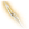SorrowFound in the Hidden Vault within the Druid Grove. You will need the Rune of the Wolf carried by Rath to access the vault. It is pickpocketed or looted from him, or rewarded for completing the quest "Save the First Druid".
 Robe of SummerFound in the Hidden Vault within the Druid Grove. You will need the Rune of the Wolf carried by Rath to access the vault. It is pickpocketed or looted from him, or rewarded for completing the quest "Save the First Druid".
Robe of SummerFound in the Hidden Vault within the Druid Grove. You will need the Rune of the Wolf carried by Rath to access the vault. It is pickpocketed or looted from him, or rewarded for completing the quest "Save the First Druid". Idol of Silvanus(X: 241 Y: 510) Stolen from the center of the Druid Grove. (Note: It's recommended to do so after the ritual has ended.) You can pickpocket this off Mol after giving it to her.
Idol of Silvanus(X: 241 Y: 510) Stolen from the center of the Druid Grove. (Note: It's recommended to do so after the ritual has ended.) You can pickpocket this off Mol after giving it to her. Ring of ProtectionRewarded by Mol for completing the quest "Steal the Sacred Idol". You must be on good terms with the tiefling kids to receive this quest.
Ring of ProtectionRewarded by Mol for completing the quest "Steal the Sacred Idol". You must be on good terms with the tiefling kids to receive this quest. Wapira's CrownRewarded by Zevlor as thanks for eliminating the goblin threat, provided you accept the reward.
Wapira's CrownRewarded by Zevlor as thanks for eliminating the goblin threat, provided you accept the reward. Mind Flayer Parasite SpecimenRewarded by Minthara for raiding the Emerald Grove. (Note: Doing so will lock you out of multiple quests and rewards.)
Mind Flayer Parasite SpecimenRewarded by Minthara for raiding the Emerald Grove. (Note: Doing so will lock you out of multiple quests and rewards.)


Dammon
(X: 177 Y: 562)


Auntie Ethel
(X: 192 Y: 546) Note: She will cease being a trader when encountered south of the Blighted Village. Corellon's GraceBought here (100 gp), or looted from Ethel in the Riverside Teahouse (X: -58 Y: 263).
Corellon's GraceBought here (100 gp), or looted from Ethel in the Riverside Teahouse (X: -58 Y: 263).Outside Druid Grove
 The Deathstalker MantleRewarded to The Dark Urge (Origin) by Sceleritas Fel for murdering either Alfira or Quil during a camp event. (Note: It's recommended to leave Alfira alive by non-lethally knocking her out before each Long Rest.)
The Deathstalker MantleRewarded to The Dark Urge (Origin) by Sceleritas Fel for murdering either Alfira or Quil during a camp event. (Note: It's recommended to leave Alfira alive by non-lethally knocking her out before each Long Rest.)
 Scroll of True ResurrectionObtained by following Gale's revival protocol after he dies. You can keep the scroll for later by simply having Withers revive Gale. The scroll is unobtainable after Gale is revived this way.
Scroll of True ResurrectionObtained by following Gale's revival protocol after he dies. You can keep the scroll for later by simply having Withers revive Gale. The scroll is unobtainable after Gale is revived this way.
 Silver Pendant(X: 160 Y: 373) Found on a skeleton on the cliff southwest of the Druid Grove by jumping up two small ridges and climbing a wooden ladder to reach this area.
Silver Pendant(X: 160 Y: 373) Found on a skeleton on the cliff southwest of the Druid Grove by jumping up two small ridges and climbing a wooden ladder to reach this area.
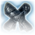Fleetfingers(X: 77 Y: 347) Found in a buried chest in the forest.
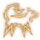Scratch(X: 69 Y: 476) Recruited by leaving Scratch with your scent so he finds your camp.
Owlbear Nest

 Moondrop Pendant(X: -321 Y: -135) Found in a Selûnite chest. You must read the Selûnite Prayer Sheet in front of the chest to unlock it. The sheet can be spotted on the ground behind the statue of Selûne by passing a Perception check.
Moondrop Pendant(X: -321 Y: -135) Found in a Selûnite chest. You must read the Selûnite Prayer Sheet in front of the chest to unlock it. The sheet can be spotted on the ground behind the statue of Selûne by passing a Perception check. Vision of the AbsoluteCrafted from the Shaft of a Broken Spear and the Head of a Broken Spear (by right-clicking on one of the items in your inventory and pressing "combine", then dragging the other item into the open slot). Shaft of a Broken Spear is found on the body of Edowin (X: 136 Y: 446) in the forest west of the Druid Grove, and Head of a Broken Spear is looted from the owlbear in the Owlbear Nest.
Vision of the AbsoluteCrafted from the Shaft of a Broken Spear and the Head of a Broken Spear (by right-clicking on one of the items in your inventory and pressing "combine", then dragging the other item into the open slot). Shaft of a Broken Spear is found on the body of Edowin (X: 136 Y: 446) in the forest west of the Druid Grove, and Head of a Broken Spear is looted from the owlbear in the Owlbear Nest.
Blighted Village


 Sussur DaggerCrafted in the forge (X: -477 Y: -378) during "Finish the Masterwork Weapon" using the Sussur Tree in the Underdark (X: -15 Y: -137). (Note: Only one Sussur weapon can be forged.)
Sussur DaggerCrafted in the forge (X: -477 Y: -378) during "Finish the Masterwork Weapon" using the Sussur Tree in the Underdark (X: -15 Y: -137). (Note: Only one Sussur weapon can be forged.) Sussur SickleCrafted in the forge (X: -477 Y: -378) during "Finish the Masterwork Weapon" using the Sussur Tree in the Underdark (X: -15 Y: -137). (Note: Only one Sussur weapon can be forged.)
Sussur SickleCrafted in the forge (X: -477 Y: -378) during "Finish the Masterwork Weapon" using the Sussur Tree in the Underdark (X: -15 Y: -137). (Note: Only one Sussur weapon can be forged.) Sussur GreatswordCrafted in the forge (X: -477 Y: -378) during "Finish the Masterwork Weapon" using the Sussur Tree in the Underdark (X: -15 Y: -137). (Note: Only one Sussur weapon can be forged.)
Sussur GreatswordCrafted in the forge (X: -477 Y: -378) during "Finish the Masterwork Weapon" using the Sussur Tree in the Underdark (X: -15 Y: -137). (Note: Only one Sussur weapon can be forged.)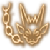Shovel(X: -666 Y: -332) Recruited after finding the Scroll of Summon Quasit in the Apothecary's Cellar (X: 34 Y: 379), located behind the moveable bookshelf, in the casket just to your right as you enter the cavernous room. A Wizard can scribe the spell to keep Shovel as a permanently available summon. Alternatively, a Warlock or Draconic Bloodline Sorcerer can learn the spell if they choose the line, "Shovel is fine" when talking to the quasit before going through the magic mirror. You've succeeded if Shovel says "Oh, oh, a spell shite!" after entering the mirror.
 Suspicious PoisonFound in a chest in the Apothecary's Cellar. (Note: This can be used as a powerful grenade.)
Suspicious PoisonFound in a chest in the Apothecary's Cellar. (Note: This can be used as a powerful grenade.)
 Forbidden Knowledge(X: -649 Y: -362) Obtained by reading the Necromancy of Thay, found in a gated section behind the magic mirror in the Apothecary's Cellar. To read the book, you'll need the Dark Amethyst, located near the Phase Spider Matriarch in the Whispering Deapths (X: -550 Y: -350).
Forbidden Knowledge(X: -649 Y: -362) Obtained by reading the Necromancy of Thay, found in a gated section behind the magic mirror in the Apothecary's Cellar. To read the book, you'll need the Dark Amethyst, located near the Phase Spider Matriarch in the Whispering Deapths (X: -550 Y: -350).Whispering Depths
 Spiderstep Boots(X: -514 Y: -411) Found in a chest in the Arachnomancer's lab within the Whispering Depths.
Spiderstep Boots(X: -514 Y: -411) Found in a chest in the Arachnomancer's lab within the Whispering Depths.

Sunlit Wetlands
 The Sparkle Hands(X: 95 Y: 210) Found in a chest at the base of large tree stump on the island containing a group of mud mephits.
The Sparkle Hands(X: 95 Y: 210) Found in a chest at the base of large tree stump on the island containing a group of mud mephits.
 Gandrel's Aspiration(X: -26 Y: 238) Looted from Gandrel, the monster hunter who can be found just to the Southwest of the Riverside Teahouse waypoint.
Gandrel's Aspiration(X: -26 Y: 238) Looted from Gandrel, the monster hunter who can be found just to the Southwest of the Riverside Teahouse waypoint. Paid the Price(X: -58 Y: 263) Obtained by accepting Ethel's offer to eliminate the parasite. (Note: This option is mutually exclusive with Volo's Ersatz Eye and Wyll's stone eye options; you can only undergo one questionable eye surgery per character.)
Paid the Price(X: -58 Y: 263) Obtained by accepting Ethel's offer to eliminate the parasite. (Note: This option is mutually exclusive with Volo's Ersatz Eye and Wyll's stone eye options; you can only undergo one questionable eye surgery per character.) Auntie Ethel's Hair(X: -412 Y: 577) Obtained by weakening Ethel to below 20% HP and allowing her to flee once she begs for her life on her turn. (Note: It's recommended to intiminate Ethel into leaving without taking Mayrina.)
Auntie Ethel's Hair(X: -412 Y: 577) Obtained by weakening Ethel to below 20% HP and allowing her to flee once she begs for her life on her turn. (Note: It's recommended to intiminate Ethel into leaving without taking Mayrina.)


Goblin Camp

 Volo's Ersatz Eye(X: 333 Y: -8) Obtained by agreeing to a surgical extraction of the tadpole after Volo suggests it at camp. (Note: He will cease being a camp trader if you choose to do this.)
Volo's Ersatz Eye(X: 333 Y: -8) Obtained by agreeing to a surgical extraction of the tadpole after Volo suggests it at camp. (Note: He will cease being a camp trader if you choose to do this.) Owlbear Cub(X: -115 Y: 431) Recruited through the following steps. First, encounter the mother owlbear in the Owlbear Nest. After a Long Rest, find the Owlbear Cub in the Goblin Camp. Speak to it, and let it know how to find you. Finally, either intimidate Krolla into releasing the Owlbear Cub, or kill all goblins. It will become a permanent member upon its second visit to your camp.
Owlbear Cub(X: -115 Y: 431) Recruited through the following steps. First, encounter the mother owlbear in the Owlbear Nest. After a Long Rest, find the Owlbear Cub in the Goblin Camp. Speak to it, and let it know how to find you. Finally, either intimidate Krolla into releasing the Owlbear Cub, or kill all goblins. It will become a permanent member upon its second visit to your camp. Crusher's Ring(X: -70 Y: 439) Stolen from Crusher by slipping it off his toe when he demands you kiss his feet (DC 10 Sleight of Hand check), or looted from him.
Crusher's Ring(X: -70 Y: 439) Stolen from Crusher by slipping it off his toe when he demands you kiss his feet (DC 10 Sleight of Hand check), or looted from him.
 Potion of Vitality(X: -115 Y: 338) Found in a chest next to three Goblins, near the exit to the Rosymorn Monastery Trail.
Potion of Vitality(X: -115 Y: 338) Found in a chest next to three Goblins, near the exit to the Rosymorn Monastery Trail.Grat the Trader
(X: -99 Y: 425) Note: He will cease being a trader if the booze is poisoned.


Shattered Sanctum
 Brand of the Absolute(X: 298 Y: -16) Obtained by agreeing to be branded by Priestess Gut. Any or all characters can be branded.
Brand of the Absolute(X: 298 Y: -16) Obtained by agreeing to be branded by Priestess Gut. Any or all characters can be branded.
 Loviatar's Love(X: 338 Y: -21) Obtained by submitting to Abdirak and putting on a good performance for him.
Loviatar's Love(X: 338 Y: -21) Obtained by submitting to Abdirak and putting on a good performance for him.


 Ring of Poison Resistance(X: 338 Y: 14) Found on a skeleton inside a sarcophagus just before the Worg Pens entrance.
Ring of Poison Resistance(X: 338 Y: 14) Found on a skeleton inside a sarcophagus just before the Worg Pens entrance.
 Amulet of Selûne's Chosen(X: 296 Y: 71) Stolen from Dror Ragzlin's treasure pile. (Note: Recommended to feed Gale.)
Amulet of Selûne's Chosen(X: 296 Y: 71) Stolen from Dror Ragzlin's treasure pile. (Note: Recommended to feed Gale.)


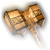Faithbreaker(X: 297 Y: 40) Looted from Dror Ragzlin.
 Boots of Striding(X: 332 Y: 43) Looted from Minthara, or obtained by recruiting her in Moonrise Towers.
Boots of Striding(X: 332 Y: 43) Looted from Minthara, or obtained by recruiting her in Moonrise Towers. Spidersilk Armour(X: 332 Y: 43) Looted from Minthara, or obtained by recruiting her in Moonrise Towers.
Spidersilk Armour(X: 332 Y: 43) Looted from Minthara, or obtained by recruiting her in Moonrise Towers.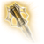Xyanyde(X: 332 Y: 43) Looted from Minthara, or obtained by recruiting her in Moonrise Towers.
Roah Moonglow
(X: 274 Y: -30)


Worg Pens
(X: 342 Y: 31)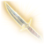Worgfang(X: 386 Y: -17) Found in a pile of bones in the cell with the worgs.


Waukeen's Rest
Note: You must complete this area upon your first visit, before resting or fast-travelling away. Otherwise, several quests and items become unavailable. Svartlebee's Woundseeker(X: -66 Y: 609) Looted from Gauntlet Yeva. She will next reappear in Act 2 under Moonrise Towers, where she can be disarmed without becoming hostile.
Svartlebee's Woundseeker(X: -66 Y: 609) Looted from Gauntlet Yeva. She will next reappear in Act 2 under Moonrise Towers, where she can be disarmed without becoming hostile.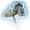Hamarhraft(X: -84 Y: 630) Found in a chest on the 2nd floor of the inn, in the room adjacent to the trapped man. (Note: It's recommended to come back for it after the fire has burned itself out.)
 The Spellsparkler(X: -57 Y: 618) Rewarded by Counsellor Florrick for rescuing her from the burning inn. You can only choose one.
The Spellsparkler(X: -57 Y: 618) Rewarded by Counsellor Florrick for rescuing her from the burning inn. You can only choose one. The Joltshooter(X: -57 Y: 618) Rewarded by Counsellor Florrick for rescuing her from the burning inn. You can only choose one.
The Joltshooter(X: -57 Y: 618) Rewarded by Counsellor Florrick for rescuing her from the burning inn. You can only choose one. The Sparky Points(X: -57 Y: 618) Rewarded by Counsellor Florrick for rescuing her from the burning inn. You can only choose one.
The Sparky Points(X: -57 Y: 618) Rewarded by Counsellor Florrick for rescuing her from the burning inn. You can only choose one.Zhentarim Hideout
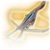Harold(X: 277 Y: -247) Rewarded for bringing the unopened Caravan Strongbox to Zarys. (Note: It's recommended to pickpocket the Caravan Strongbox off her afterwards to obtain the Iron Flask.)

Brem
(X: 295 Y: -251) Note: Brem's secret stock is unlocked after completing the quest "Find the Missing Shipment".


 Titanstring Bow310 gp / 400 gp (Can also be bought from Lann Tarv on the Main Floor of Moonrise Towers in Act 2.)
Titanstring Bow310 gp / 400 gp (Can also be bought from Lann Tarv on the Main Floor of Moonrise Towers in Act 2.)Githyanki Patrol
 Silver Sword of the Astral Plane(X: -70 Y: 828) Obtained by casting Command: Drop or Disarming Attack on Kith'rak Voss before he flies away, or rewarded for showing him the Orphic Hammer in Act 3.
Silver Sword of the Astral Plane(X: -70 Y: 828) Obtained by casting Command: Drop or Disarming Attack on Kith'rak Voss before he flies away, or rewarded for showing him the Orphic Hammer in Act 3..png)
.png)
Risen Road

 Sword of Justice(X: 110 Y: 560) Looted from Anders in the Risen Road Toll House, or rewarded for killing Karlach at first meeting.
Sword of Justice(X: 110 Y: 560) Looted from Anders in the Risen Road Toll House, or rewarded for killing Karlach at first meeting. Gloves of Heroism(X: -674 Y: -401) Found in a chest at the back of the hidden room in the cellar of the Toll House. The room can be opened by sitting on the two thrones simultaneously (or by placing objects on each throne).
Gloves of Heroism(X: -674 Y: -401) Found in a chest at the back of the hidden room in the cellar of the Toll House. The room can be opened by sitting on the two thrones simultaneously (or by placing objects on each throne).
 Speedy Reply(X: 25 Y: 603) Found on the body of a dead caravan agent, near the cave where gnolls are attacking the caravan survivors.
Speedy Reply(X: 25 Y: 603) Found on the body of a dead caravan agent, near the cave where gnolls are attacking the caravan survivors. Iron Flask(X: 39 Y: 628) Stolen from the Caravan Strongbox near the two survivors. (Note: It's recommended to give the unopened Caravan Strongbox to Zarys in the Zhentarim Hideout for a quest reward, then pickpocket it off her.)
Iron Flask(X: 39 Y: 628) Stolen from the Caravan Strongbox near the two survivors. (Note: It's recommended to give the unopened Caravan Strongbox to Zarys in the Zhentarim Hideout for a quest reward, then pickpocket it off her.) Reason's Grasp(X: 37 Y: 644) Found in a chest on a ledge in the cave where gnolls are attacking the caravan survivors. (Note: Recommended to feed Gale.)
Reason's Grasp(X: 37 Y: 644) Found in a chest on a ledge in the cave where gnolls are attacking the caravan survivors. (Note: Recommended to feed Gale.) Smuggler's Ring(X: 57 Y: 514) Found on a skeleton, hidden in a bush on the lower path following the river, east of the broken bridge.
Smuggler's Ring(X: 57 Y: 514) Found on a skeleton, hidden in a bush on the lower path following the river, east of the broken bridge.Underdark

 Luminous Armour(X: 176 Y: -247) Found in a chest in the Selûnite Outpost area. The chest is behind a hidden door revealed by a Perception check, or it can be accessed by jumping from the room with the waypoint.
Luminous Armour(X: 176 Y: -247) Found in a chest in the Selûnite Outpost area. The chest is behind a hidden door revealed by a Perception check, or it can be accessed by jumping from the room with the waypoint. Phalar Aluve(X: 116 Y: -192) Found embedded into a rock and freed by passing either a DC 15 Strength check or a DC 15 Religion check. Alternatively, blood will lossen it, and a Cleric of Eilistraee can release it without needing an ability check.
Phalar Aluve(X: 116 Y: -192) Found embedded into a rock and freed by passing either a DC 15 Strength check or a DC 15 Religion check. Alternatively, blood will lossen it, and a Cleric of Eilistraee can release it without needing an ability check. Amulet of the Unworthy(X: 160 Y: -147) Looted from a minotaur wandering north of the Selûnite Outpost.
Amulet of the Unworthy(X: 160 Y: -147) Looted from a minotaur wandering north of the Selûnite Outpost. Explorer's Ring(X: -12 Y: -50) Found on a skeleton atop the stones surrounding the Bibberbang field north of the Dread Hollow region. It can be reached by jumping from a series of rock ledges or by teleporting up to the location.
Explorer's Ring(X: -12 Y: -50) Found on a skeleton atop the stones surrounding the Bibberbang field north of the Dread Hollow region. It can be reached by jumping from a series of rock ledges or by teleporting up to the location. Mourning FrostCrafted from components carried by three drow mages competing to discover the Adamantine Forge, found at various Underdark locations. The Icy Helve is with Dhourn west of the Selûnite Outpost (X: 121 Y: -245), the Icy Metal looted from the Pale Corpse in the Myconid Colony's secret area unlocked by completing the quest "Defeat the Duergar Intruders" (X: 53 Y: -75), and the Icy Crystal looted from Filro the Forgotten near the Sussur Tree (X: -57 Y: -160).
Mourning FrostCrafted from components carried by three drow mages competing to discover the Adamantine Forge, found at various Underdark locations. The Icy Helve is with Dhourn west of the Selûnite Outpost (X: 121 Y: -245), the Icy Metal looted from the Pale Corpse in the Myconid Colony's secret area unlocked by completing the quest "Defeat the Duergar Intruders" (X: 53 Y: -75), and the Icy Crystal looted from Filro the Forgotten near the Sussur Tree (X: -57 Y: -160).
 Dog Collar(X: -41 Y: -209) Found in a grave on the cliff overlooking Arcane Tower to the south of the Sussur Tree waypoint. (On the 4th floor of the Arcane Tower, there's a button in the North-Eastern corner. When pressed, it seems inactive. However, if you wear the Dog Collar and interact with it, you'll discover it's actually a food dispenser for Lenore's pet, as it dispenses a piece of raw steak.)
Dog Collar(X: -41 Y: -209) Found in a grave on the cliff overlooking Arcane Tower to the south of the Sussur Tree waypoint. (On the 4th floor of the Arcane Tower, there's a button in the North-Eastern corner. When pressed, it seems inactive. However, if you wear the Dog Collar and interact with it, you'll discover it's actually a food dispenser for Lenore's pet, as it dispenses a piece of raw steak.) Shortsword of First Blood(X: 73 Y: -187) Found on the corpse of an executed deep gnome, near an entrance to the Decrepit Village.
Shortsword of First Blood(X: 73 Y: -187) Found on the corpse of an executed deep gnome, near an entrance to the Decrepit Village. Duergar AntidoteLooted from Gekh Coal, a member of the duergar slave hunters in the Decrepit Village (X: 14 Y: -196), and looted from Skickpit in Grymforge.
Duergar AntidoteLooted from Gekh Coal, a member of the duergar slave hunters in the Decrepit Village (X: 14 Y: -196), and looted from Skickpit in Grymforge.
 Drow Studded Leather Armour(X: 71 Y: -220) Found in a chest at Lolth's Cultist's cache, climbing up a high spot near the entrance of The Festering Cove.
Drow Studded Leather Armour(X: 71 Y: -220) Found in a chest at Lolth's Cultist's cache, climbing up a high spot near the entrance of The Festering Cove.

 The Blast Pendant(X: 121 Y: -245) Looted from Dhourn, one of the petrified drow to the west of the Selûnite Outpost.
The Blast Pendant(X: 121 Y: -245) Looted from Dhourn, one of the petrified drow to the west of the Selûnite Outpost.
Myconoid Colony

 Shadow of Menzoberranzan(X: 49 Y: -72) Found on the Pale Corpse, in the secret area unlocked by completing the quest "Defeat the Duergar Intruders".
Shadow of Menzoberranzan(X: 49 Y: -72) Found on the Pale Corpse, in the secret area unlocked by completing the quest "Defeat the Duergar Intruders". Haste Spore Flask(X: 79 Y: -106) Rewarded by Sovereign Spaw for completing the quest "Defeat the Duergar Intruders".
Haste Spore Flask(X: 79 Y: -106) Rewarded by Sovereign Spaw for completing the quest "Defeat the Duergar Intruders".

 Winter's ClutchesRewarded by Glut for completing the quest "Avenge Glut's Circle" by defeating Sovereign Spaw (X: 58 Y: -110), bought from Lady Esther at Rosymorn Monastery Trail (90 gp / 170 gp) (X: -43 Y: -129), and found on a counter at Sorcerous Sundries guarded by a lava elemental (X: -2 Y: -66).
Winter's ClutchesRewarded by Glut for completing the quest "Avenge Glut's Circle" by defeating Sovereign Spaw (X: 58 Y: -110), bought from Lady Esther at Rosymorn Monastery Trail (90 gp / 170 gp) (X: -43 Y: -129), and found on a counter at Sorcerous Sundries guarded by a lava elemental (X: -2 Y: -66).Blurg
(X: 111 Y: -90)


Omeluum
(X: 112 Y: -88) Blurg will summon him.


 Ring of Mind-ShieldingObtained after completing the quest "Help Omeluum Investigate the Parasite". You can buy it either with gold (70 gp), or by supplying information about the Nautiloid gathered from Eldritch Runes in the Prologue. (Note: Recommended to feed Gale.)
Ring of Mind-ShieldingObtained after completing the quest "Help Omeluum Investigate the Parasite". You can buy it either with gold (70 gp), or by supplying information about the Nautiloid gathered from Eldritch Runes in the Prologue. (Note: Recommended to feed Gale.)Derryth Bonecloak
(X: 50 Y: -94)


 Gloves of Uninhibited KushigoRewarded by Derryth Bonecloak after finding and saving Baelen Bonecloak during the quest "Find the Mushroom Picker".
Gloves of Uninhibited KushigoRewarded by Derryth Bonecloak after finding and saving Baelen Bonecloak during the quest "Find the Mushroom Picker".The Festering Cove
(X: 81 Y: -241) The entrance to The Festering Cove can be found in the torchstalk field northeast of the Arcane Tower and southeast of the Decrepit Village. There is a Cragged Rock that can be reached by jumping over two mushrooms growing out of the cliff face. Climb down the Cragged Rock to reach The Festering Cove. (Note: Be careful of the exploding mushroom that can throw you to your death.)
 Sickle of BOOOAL(X: -417 Y: 284) Pickpocketed or looted from Pooldripp the Zealous, or obtained by agreeing to be BOOOAL's Chosen after causing his power to momentarily falter. Alternatively, selecting different dialog options during the cutscene allows you to eliminate BOOOAL without provoking the kuo-toa into attacking. Once this is done, you can then buy the weapon from Pooldripp the Zealous (190 gp).
Sickle of BOOOAL(X: -417 Y: 284) Pickpocketed or looted from Pooldripp the Zealous, or obtained by agreeing to be BOOOAL's Chosen after causing his power to momentarily falter. Alternatively, selecting different dialog options during the cutscene allows you to eliminate BOOOAL without provoking the kuo-toa into attacking. Once this is done, you can then buy the weapon from Pooldripp the Zealous (190 gp). BOOOAL's Blessing(X: -313 Y: 137) Rewarded for sacrificing a companion to BOOOAL, or agreeing to be BOOOAL's Chosen after pickpocketing the Sickle of BOOOAL. Everyone in your active party will receive the blessing.
BOOOAL's Blessing(X: -313 Y: 137) Rewarded for sacrificing a companion to BOOOAL, or agreeing to be BOOOAL's Chosen after pickpocketing the Sickle of BOOOAL. Everyone in your active party will receive the blessing.Arcane Tower
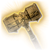Skybreaker(X: 27 Y: -298) Found in a chest in front of the Arcane Tower.

 Mystra's Grace(X: -36 Y: 265) Found in the Chest of the Mundane on the northern balcony of the Arcane Tower's 3rd floor, the same level as the arcane turrets.
Mystra's Grace(X: -36 Y: 265) Found in the Chest of the Mundane on the northern balcony of the Arcane Tower's 3rd floor, the same level as the arcane turrets.
 Guiding Light(X: -27 Y: -284) Obtained by telling Bernard the line that begins "How can I trust?", learned from a book on the greenhouse level. Bernard will place the ring for you on a nearby table. Alternatively, it can be looted from Bernard.
Guiding Light(X: -27 Y: -284) Obtained by telling Bernard the line that begins "How can I trust?", learned from a book on the greenhouse level. Bernard will place the ring for you on a nearby table. Alternatively, it can be looted from Bernard.
 Club of Hill Giant Strength(X: -26 Y: -272) Found by breaking the Stool of Hill Giant Strength on the top floor, with Bernard. The stool is underneath the thatched roof section and is knocked over on its side.
Club of Hill Giant Strength(X: -26 Y: -272) Found by breaking the Stool of Hill Giant Strength on the top floor, with Bernard. The stool is underneath the thatched roof section and is knocked over on its side. Staff of Arcane Blessing(X: 164 Y: 432) Found leaning against a table in the basement of the Arcane Tower, which can be accessed by wearing the Guiding Light. The ring serves to activate a concealed button on the tower's teleporter pad, granting access to the basement. Alternatively, you can reach the Arcane Tower's basement by ascending the stairs behind the generator, utilizing Feather Fall, and leaping down into the gap between the wall and the wooden staircase.
Staff of Arcane Blessing(X: 164 Y: 432) Found leaning against a table in the basement of the Arcane Tower, which can be accessed by wearing the Guiding Light. The ring serves to activate a concealed button on the tower's teleporter pad, granting access to the basement. Alternatively, you can reach the Arcane Tower's basement by ascending the stairs behind the generator, utilizing Feather Fall, and leaping down into the gap between the wall and the wooden staircase.
Zurkhwood Skiffs
 Bow of the BansheeLooted from Corsair Greymon, or bought from him if he surivives the fight (190 gp). He'll be found in the main chamber of Grymforge (X: -632 Y: 326).
Bow of the BansheeLooted from Corsair Greymon, or bought from him if he surivives the fight (190 gp). He'll be found in the main chamber of Grymforge (X: -632 Y: 326). Jorgoral's GreatswordLooted from Corsair Greymon, or bought from him if he surivives the fight (380 gp). He'll be found in the main chamber of Grymforge (X: -632 Y: 326).
Jorgoral's GreatswordLooted from Corsair Greymon, or bought from him if he surivives the fight (380 gp). He'll be found in the main chamber of Grymforge (X: -632 Y: 326). Shining Staver-of-SkullsLooted from Corsair Greymon, or bought from him if he surivives the fight (65 gp). He'll be found in the main chamber of Grymforge (X: -632 Y: 326).
Shining Staver-of-SkullsLooted from Corsair Greymon, or bought from him if he surivives the fight (65 gp). He'll be found in the main chamber of Grymforge (X: -632 Y: 326).Grymforge
 Fetish of Callarduran Smoothhands(X: -610 Y: 408) Stolen from one of the dead deep gnomes that a pair of duergar are throwing into the lake. If you talk to the duergar you can succeed a DC 10 Perception check, then a DC 20 Sleight of Hand or DC 10 Deception check to loot the corpse without a fight.
Fetish of Callarduran Smoothhands(X: -610 Y: 408) Stolen from one of the dead deep gnomes that a pair of duergar are throwing into the lake. If you talk to the duergar you can succeed a DC 10 Perception check, then a DC 20 Sleight of Hand or DC 10 Deception check to loot the corpse without a fight. Infernal Alloy(X: -659 Y: 374) Obtained from Stonemason Kith by passing three checks (DC 10 History, DC 10 Investigation, and DC 10 Perception) during conversation. If these checks fail, the alloy can be bought (100 gp) or looted from him.
Infernal Alloy(X: -659 Y: 374) Obtained from Stonemason Kith by passing three checks (DC 10 History, DC 10 Investigation, and DC 10 Perception) during conversation. If these checks fail, the alloy can be bought (100 gp) or looted from him.
 Armour of Uninhibited Kushigo(X: -628 Y: 320) Rewarded by Sergeant Thrinn for returning her Boots of Speed, found on the poisoned gnome, Thulla, in the Myconid Colony.
Armour of Uninhibited Kushigo(X: -628 Y: 320) Rewarded by Sergeant Thrinn for returning her Boots of Speed, found on the poisoned gnome, Thulla, in the Myconid Colony. Bracing Band(X: -628 Y: 320) Rewarded by Sergeant Thrinn for returning her Boots of Speed, found on the poisoned gnome, Thulla, in the Myconid Colony.
Bracing Band(X: -628 Y: 320) Rewarded by Sergeant Thrinn for returning her Boots of Speed, found on the poisoned gnome, Thulla, in the Myconid Colony. Devilfoil MaskStolen from a table near Sergeant Thrinn, at the Dig Site (X: -620 Y: 325). Found on the ground at the foot of a staircase near Skarjall, behind a wall of rubble (X: -666 Y: 464). Found on an altar guarded by a merregon legionnaire and hellsboars (X: -574 Y: 380).
Devilfoil MaskStolen from a table near Sergeant Thrinn, at the Dig Site (X: -620 Y: 325). Found on the ground at the foot of a staircase near Skarjall, behind a wall of rubble (X: -666 Y: 464). Found on an altar guarded by a merregon legionnaire and hellsboars (X: -574 Y: 380).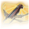Firestoker(X: -574 Y: 382) Found in a chest in the room with the hellsboars.


 Dark Justiciar MailFound on a skeleton near the Grymforge waypoint (X: -655 Y: 424), and south of the Ancient Forge waypoint (X: -609 Y: 246).
Dark Justiciar MailFound on a skeleton near the Grymforge waypoint (X: -655 Y: 424), and south of the Ancient Forge waypoint (X: -609 Y: 246). Sharran Crossbow(X: -666 Y: 398) Found in a chest behind two archery targets. When picking it up from the chest, the player needs to pass a DC 10 Intelligence Saving Throw to recognize that it's actually a Sharran Crossbow.
Sharran Crossbow(X: -666 Y: 398) Found in a chest behind two archery targets. When picking it up from the chest, the player needs to pass a DC 10 Intelligence Saving Throw to recognize that it's actually a Sharran Crossbow.


 Dark Justiciar Helm(X: -609 Y: 245) Found on a skeleton south of the Ancient Forge waypoint. Two more are found in the Shadowfell in Act 2.
Dark Justiciar Helm(X: -609 Y: 245) Found on a skeleton south of the Ancient Forge waypoint. Two more are found in the Shadowfell in Act 2..png)


 Mind Flayer Parasite Specimen(X: -854 Y: 780) Rewarded by Nere for completing the quest "Free True Soul Nere" by siding with him in the fight. You can still loot him afterwards.Mind Flayer Parasite Specimen(X: -854 Y: 780) Looted from Nere. (Note: It's recommended to convince Barcus to stay at your camp afterwards.)
Mind Flayer Parasite Specimen(X: -854 Y: 780) Rewarded by Nere for completing the quest "Free True Soul Nere" by siding with him in the fight. You can still loot him afterwards.Mind Flayer Parasite Specimen(X: -854 Y: 780) Looted from Nere. (Note: It's recommended to convince Barcus to stay at your camp afterwards.)

The Adamantine Forge
 Scimitar Mould(X: -604 Y: 322) Found on a skeleton on a ruined stairwell with two levers, overlooking the rubble that has trapped Nere. Used to craft an Adamantine Scimitar.
Scimitar Mould(X: -604 Y: 322) Found on a skeleton on a ruined stairwell with two levers, overlooking the rubble that has trapped Nere. Used to craft an Adamantine Scimitar. Shield Mould(X: -560 Y: 410) Found on a skeleton located at the very top of the stairs near the room with the merregon legionnaire and the hellsboars. Used to craft an Adamantine Shield.
Shield Mould(X: -560 Y: 410) Found on a skeleton located at the very top of the stairs near the room with the merregon legionnaire and the hellsboars. Used to craft an Adamantine Shield. Longsword Mould(X: -626 Y: 406) Found on an overhanging metal bridge, accessed via northmost stairs. Used to craft an Adamantine Longsword.
Longsword Mould(X: -626 Y: 406) Found on an overhanging metal bridge, accessed via northmost stairs. Used to craft an Adamantine Longsword. Splint Mould(X: -593 Y: 311) Found near the Ancient Forge waypoint on a rock ledge overlooking lava pools. Used to craft an Adamantine Splint Armor.
Splint Mould(X: -593 Y: 311) Found near the Ancient Forge waypoint on a rock ledge overlooking lava pools. Used to craft an Adamantine Splint Armor.
 Scale Mail Mould(X: -618 Y: 264) Found near the Ancient Forge waypoint on the floor next to a standing torch. Used to craft an Adamantine Scale Mail.
Scale Mail Mould(X: -618 Y: 264) Found near the Ancient Forge waypoint on the floor next to a standing torch. Used to craft an Adamantine Scale Mail. Mithral OreMined from one of two Ore Veins. The first can be found southwest of the Anient Forge waypoint, across some lava, next to a cliff (X: -642 Y: 253). The second is located at the end of a side path that splits from the main staircase leading to the Adamantine Forge (X: -556 Y: 277).
Mithral OreMined from one of two Ore Veins. The first can be found southwest of the Anient Forge waypoint, across some lava, next to a cliff (X: -642 Y: 253). The second is located at the end of a side path that splits from the main staircase leading to the Adamantine Forge (X: -556 Y: 277). Adamantine Scimitar(X: -557 Y: 234) Crafted from the Scimitar Mould and Mithral Ore after defeating Grym.
Adamantine Scimitar(X: -557 Y: 234) Crafted from the Scimitar Mould and Mithral Ore after defeating Grym. Adamantine Shield(X: -557 Y: 234) Crafted from the Shield Mould and Mithral Ore after defeating Grym.
Adamantine Shield(X: -557 Y: 234) Crafted from the Shield Mould and Mithral Ore after defeating Grym. Adamantine Longsword(X: -557 Y: 234) Crafted from the Longsword Mould and Mithral Ore after defeating Grym.
Adamantine Longsword(X: -557 Y: 234) Crafted from the Longsword Mould and Mithral Ore after defeating Grym. Adamantine Splint Armor(X: -557 Y: 234) Crafted from the Splint Armor Mould and Mithral Ore after defeating Grym.
Adamantine Splint Armor(X: -557 Y: 234) Crafted from the Splint Armor Mould and Mithral Ore after defeating Grym.
 Adamantine Scale Mail(X: -557 Y: 234) Crafted from the Scale Mail Mould and Mithral Ore after defeating Grym.
Adamantine Scale Mail(X: -557 Y: 234) Crafted from the Scale Mail Mould and Mithral Ore after defeating Grym.Lady Esther
(X: -43 Y: -129) She is in the Mountain Pass area, down the stairs and to the right from the Trielta Crags waypoint.


Rosymorn Monastery
 Ceremonial Mace(X: 45 Y: 37) Looted from a random kobold in the Firewine storage room. Place the Ceremonial Mace onto the Southeast altar for Dawnmaster Stockhold.
Ceremonial Mace(X: 45 Y: 37) Looted from a random kobold in the Firewine storage room. Place the Ceremonial Mace onto the Southeast altar for Dawnmaster Stockhold.
 Ceremonial Battleaxe(X: 105 Y: 44) Found in one of the dormitories, guarded by a Guardian of Faith. Place the Ceremonial Battleaxe onto the Southwest altar for Dawnmaster Vaseid.
Ceremonial Battleaxe(X: 105 Y: 44) Found in one of the dormitories, guarded by a Guardian of Faith. Place the Ceremonial Battleaxe onto the Southwest altar for Dawnmaster Vaseid. Ceremonial Warhammer(X: 80 Y: 44) Found in the Giant Eagle's nest. Place the Ceremonial Warhammer on the Northeast altar for Dawnmaster Seed. You can take all four weapons once you collect the Dawnmaster's Crest.
Ceremonial Warhammer(X: 80 Y: 44) Found in the Giant Eagle's nest. Place the Ceremonial Warhammer on the Northeast altar for Dawnmaster Seed. You can take all four weapons once you collect the Dawnmaster's Crest.
Crèche Y'llek
 Varsh Ko'kuu's Boots(X: 1288 Y: -759) Obtained from Varsh Ko'kuu in the Hatchery. The player must either kill him, or persuade him to hand over the egg by promising to take responsibility for it.Mind Flayer Parasite Specimen(X:1299, Y:-809) Three are stolen from the Infirmary, next to the Zaith'isk.
Varsh Ko'kuu's Boots(X: 1288 Y: -759) Obtained from Varsh Ko'kuu in the Hatchery. The player must either kill him, or persuade him to hand over the egg by promising to take responsibility for it.Mind Flayer Parasite Specimen(X:1299, Y:-809) Three are stolen from the Infirmary, next to the Zaith'isk.Awakened(X:1299, Y:-809) Obtained by succeeding all three saving throws upon using the Zaith'isk. If Lae'zel uses the Zaith'isk, you need only to succeed a DC 30 Arcana check in the third stage. The player character will always receive the buff.


 Circlet of Psionic Revenge(X: 1392 Y: -752) Looted from Ch'r'ai W'wargaz in the Inquisitor's Chamber.
Circlet of Psionic Revenge(X: 1392 Y: -752) Looted from Ch'r'ai W'wargaz in the Inquisitor's Chamber. Diadem of Arcane Synergy(X: 1365 Y: -663) Looted from Ardent Jhe'rezath in the Inquisitor's Chamber.
Diadem of Arcane Synergy(X: 1365 Y: -663) Looted from Ardent Jhe'rezath in the Inquisitor's Chamber. Necklace of Elemental AugmentationFound in a display case in the eastern alcove of the Inquisitor's Chamber (X: 1379 Y: -662). Also, in a chest on a shipwrecked ship located northwest of South Span Checkpoint in Wyrm's Crossing (X: -97 Y: 107).
Necklace of Elemental AugmentationFound in a display case in the eastern alcove of the Inquisitor's Chamber (X: 1379 Y: -662). Also, in a chest on a shipwrecked ship located northwest of South Span Checkpoint in Wyrm's Crossing (X: -97 Y: 107). The Skinburster(X: 1383 Y: -659) Found in a chest in the eastern alcove in the Inquisitor's Chamber.
The Skinburster(X: 1383 Y: -659) Found in a chest in the eastern alcove in the Inquisitor's Chamber.


 The Blood of LathanderFound past the secret entrance in the western alcove, revealed by rotating the two statues. The one to the south requires an Athletics check (or a grease bottle) to move and should be turned west, while the other should be turned east. Proceed through the opening, evading traps along the way, until you reach the Blood of Lathander. If the Dawnmaster's Crest has been obtained, simply place it in the altar's item slot to safely acquire the Blood of Lathander. Otherwise, taking the mace will trigger a countdown to the Monastery's destruction. The party has only four turns to either escape the Monastery or dismantle the four Lathander Solar Machines that activate the trap.
The Blood of LathanderFound past the secret entrance in the western alcove, revealed by rotating the two statues. The one to the south requires an Athletics check (or a grease bottle) to move and should be turned west, while the other should be turned east. Proceed through the opening, evading traps along the way, until you reach the Blood of Lathander. If the Dawnmaster's Crest has been obtained, simply place it in the altar's item slot to safely acquire the Blood of Lathander. Otherwise, taking the mace will trigger a countdown to the Monastery's destruction. The party has only four turns to either escape the Monastery or dismantle the four Lathander Solar Machines that activate the trap.


At Camp
This is a camp event during a Long Rest after encountering Vlaakith at Crèche Y'llek and before starting Act 3.

Act 2
Ruined Battlefield
 Frost Prince(X: 80 Y: -96) Found in a chest in the southeast, near an ambush of Shadow-Cursed Needle Blights and Shadow-Cursed Vine Blights.
Frost Prince(X: 80 Y: -96) Found in a chest in the southeast, near an ambush of Shadow-Cursed Needle Blights and Shadow-Cursed Vine Blights.

Moonlantern(X: 0 Y: -15) Looted from Kar'niss, obtained from Isobel in Last Light Inn, or found in Balthazar's room in Moonrise Towers.
 Hammergrim Mist Amulet(X: -12 Y: -7) Found in a chest in the basement of the ruined house where the Harper ambush occurs.
Hammergrim Mist Amulet(X: -12 Y: -7) Found in a chest in the basement of the ruined house where the Harper ambush occurs.

 Shadow-Cloaked Ring(X: -49 Y: 36) Looted from the Shadow Mastiff Alpha. The nearby everburning torches must be destroyed before the Mastiff will appear.
Shadow-Cloaked Ring(X: -49 Y: 36) Looted from the Shadow Mastiff Alpha. The nearby everburning torches must be destroyed before the Mastiff will appear. Ring of Shadows(X: 76 Y: 37) Rewarded by Oliver after winning both rounds of hide-and-seek. Can also be obtained by knocking him out or pickpocketing him at the exact moment the encounter becomes a tactical turn based encounter but before he vanishes. After he vanishes, you can still steal it if you can see invisible creatures.
Ring of Shadows(X: 76 Y: 37) Rewarded by Oliver after winning both rounds of hide-and-seek. Can also be obtained by knocking him out or pickpocketing him at the exact moment the encounter becomes a tactical turn based encounter but before he vanishes. After he vanishes, you can still steal it if you can see invisible creatures.

 Ring of Self Immolation(X: 29 Y: 63) Found in a chest atop a ruined tower. If needed, the key is on a nearby skeleton.
Ring of Self Immolation(X: 29 Y: 63) Found in a chest atop a ruined tower. If needed, the key is on a nearby skeleton. Family Ring(X: 108 Y: 128) Found in a burrow among rocks by following blood tracks, behind a camp. A Perception check will reveal the burrow.
Family Ring(X: 108 Y: 128) Found in a burrow among rocks by following blood tracks, behind a camp. A Perception check will reveal the burrow. Raven Gloves(X: 126 Y: 106) Rewarded by He Who Was for completing the quest "Punish the Wicked" by either calling Madeline a coward or commanding her to stab herself exactly once.
Raven Gloves(X: 126 Y: 106) Rewarded by He Who Was for completing the quest "Punish the Wicked" by either calling Madeline a coward or commanding her to stab herself exactly once.
Last Light Inn
 Hat of Fire Acuity(X: -28 Y: 171) Looted from the Strange Ox at the Last Light Inn or Rivington, but not at the Druid Grove.
Hat of Fire Acuity(X: -28 Y: 171) Looted from the Strange Ox at the Last Light Inn or Rivington, but not at the Druid Grove. Snowburst Ring(X: -80 Y: 158) Found tucked away under a loose plank in the bedroom north of the bar. A Perception check is required.
Snowburst Ring(X: -80 Y: 158) Found tucked away under a loose plank in the bedroom north of the bar. A Perception check is required. Coruscation Ring(X: 47 Y: -738) Found in a chest in a secret area of the cellar. It is reached by going through a set of Double Oak Doors blocked by a destructible spiderweb and a pile of crates. The room beyond has a Cracked Wall that, when broken, grants access to the secret area containing the chest.
Coruscation Ring(X: 47 Y: -738) Found in a chest in a secret area of the cellar. It is reached by going through a set of Double Oak Doors blocked by a destructible spiderweb and a pile of crates. The room beyond has a Cracked Wall that, when broken, grants access to the secret area containing the chest.
 Mind Flayer Parasite SpecimenRewarded by Z'rell for siding with Flaming Fist Marcus and capturing Isobel alive. (Note: Doing so will lock you out of multiple quests and rewards.)
Mind Flayer Parasite SpecimenRewarded by Z'rell for siding with Flaming Fist Marcus and capturing Isobel alive. (Note: Doing so will lock you out of multiple quests and rewards.)


 Shield of Scorching Reprisal(X: -3 Y: 215) Looted from a Flaming Fist's corpse directly east of the "Open Graves" beyond the northern bridge. A Perception check needed to detect some rubble. Strength check is then needed to smash the rubble to find the body.
Shield of Scorching Reprisal(X: -3 Y: 215) Looted from a Flaming Fist's corpse directly east of the "Open Graves" beyond the northern bridge. A Perception check needed to detect some rubble. Strength check is then needed to smash the rubble to find the body. Sylvan Scimitar(X: -64 Y: 139) Looted from Jaheira, or obtained by recruiting her after defeating Ketheric.
Sylvan Scimitar(X: -64 Y: 139) Looted from Jaheira, or obtained by recruiting her after defeating Ketheric.Quartermaster Talli
(X: -31 Y: 130) She is found near the bridge.


Dammon
(X: -34 Y: 166) He is found in the barn.


Mattis
(X: -54 Y: 141) He is found by the main entrance to Last Light Inn.

Barcus Wroot
(X: -56 Y: 133) If Barcus was saved in Grymforge he can be found in his lab at Last Light Inn.


Reithwin Tollhouse
 Flesh to Gold(X: -112 Y: -92) Obtained as a scroll (Signed Trade Visa) from Gerringothe Thorm in exchange for the entirety of the player's gold, as long as the player has at least 5000 gp. The scroll cannot be learned by Wizards.
Flesh to Gold(X: -112 Y: -92) Obtained as a scroll (Signed Trade Visa) from Gerringothe Thorm in exchange for the entirety of the player's gold, as long as the player has at least 5000 gp. The scroll cannot be learned by Wizards.
 Consumed Shadow Weave(X: -112 Y: -92) Obtained as Gale (Origin) by consuming the Shadow Weave from the corpse of Gerringothe Thorm, Malus Thorm, or Thisobald Thorm. This can be done only once and awards you one extra Level 3 Spell Slot. If you cleanse the Shadow Weave instead, you gain Mystra's Blessing.
Consumed Shadow Weave(X: -112 Y: -92) Obtained as Gale (Origin) by consuming the Shadow Weave from the corpse of Gerringothe Thorm, Malus Thorm, or Thisobald Thorm. This can be done only once and awards you one extra Level 3 Spell Slot. If you cleanse the Shadow Weave instead, you gain Mystra's Blessing. Mystra's Blessing(X: -112 Y: -92) Obtained as Gale (Origin) by either cleansing the Shadow Weave from the corpse of Gerringothe Thorm, Malus Thorm, or Thisobald Thorm. This can be done only once and awards you immunity from Acid, Cold, Fire, Force, and Thunder damage until your next Long Rest. If you consume the Shadow Weave instead, you gain Consumed Shadow Weave.
Mystra's Blessing(X: -112 Y: -92) Obtained as Gale (Origin) by either cleansing the Shadow Weave from the corpse of Gerringothe Thorm, Malus Thorm, or Thisobald Thorm. This can be done only once and awards you immunity from Acid, Cold, Fire, Force, and Thunder damage until your next Long Rest. If you consume the Shadow Weave instead, you gain Consumed Shadow Weave.
 Gloves of Battlemage's Power(X: -84 Y: -88) Found in a chest on the 2nd floor in the room with two locked doors.
Gloves of Battlemage's Power(X: -84 Y: -88) Found in a chest on the 2nd floor in the room with two locked doors.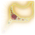Fireheart(X: -127 Y: -78) Found in a chest. The player must break a vine or jump from the outside through a window to enter in this hidden room.
Mason's Guild
 Helmet of Arcane Acuity(X: 107 Y: -758) Found in a chest in a secret area of the Reithwin Mason's Guild Basement. The basement is accessed through a trapdoor in the Mason's Guild, and the secret area can be opened by lockpicking or using the Tower-Shaped Key on the Keyholed Herald (X: 123 Y: -688).
Helmet of Arcane Acuity(X: 107 Y: -758) Found in a chest in a secret area of the Reithwin Mason's Guild Basement. The basement is accessed through a trapdoor in the Mason's Guild, and the secret area can be opened by lockpicking or using the Tower-Shaped Key on the Keyholed Herald (X: 123 Y: -688).Reithwin Graveyard


 Lightning Jabber(X: -148 Y: 115) Looted from the Cursed Kuo-Toa Chief in the ambush northeast of the Grand Mausoleum entrance.
Lightning Jabber(X: -148 Y: 115) Looted from the Cursed Kuo-Toa Chief in the ambush northeast of the Grand Mausoleum entrance.House of Healing


House of Healing Morgue
There are two entrances to this location: one west of the House of Healing, and another east of the Grand Mausoleum waypoint through the Ominous Crevice (X: -150 Y: 105). Assassin's Shortsword(X: -252 Y: 36) Found on one of a pair of skeletons along the cliffs west of the House of Healing.
Assassin's Shortsword(X: -252 Y: 36) Found on one of a pair of skeletons along the cliffs west of the House of Healing. Watcher's Shield(X: -250 Y: 36) Found on one of a pair of skeletons along the cliffs west of the House of Healing.
Watcher's Shield(X: -250 Y: 36) Found on one of a pair of skeletons along the cliffs west of the House of Healing. Firzu's Ring of Trading(X: 82 Y: -1006) Found on a corpse in a hidden room just south of the entrance hall.
Firzu's Ring of Trading(X: 82 Y: -1006) Found on a corpse in a hidden room just south of the entrance hall. Strange Tendril Amulet(X: 85 Y: -1007) Found in a chest in a hidden room just south of the entrance hall.
Strange Tendril Amulet(X: 85 Y: -1007) Found in a chest in a hidden room just south of the entrance hall.


The Waning Moon


Moonrise Towers
Mind Flayer Parasite Specimen(X: -153 Y: -130) Two are looted from the guards in front of the stairs leading to the main entrance, Adept Merim and Zealot Malik.Mind Flayer Parasite Specimen(X: -71 Y: -187) Two are obtained by taking the Zhentarim Shipping Crate at the docks.Mind Flayer Parasite SpecimenLooted from Zealot Krizt, who will be guarding the broken bridge to Moonrise Towers when first approaching it (X: -100 Y: -149). If she is not attacked, her corpse can be later found in the Oubliette under Moonrise Towers (X: 625 Y: -87). Barbed ArrowThree are looted from Looted from "Timothy" the Gnoll, "Tomelia" the Gnoll, and The Warden.
Barbed ArrowThree are looted from Looted from "Timothy" the Gnoll, "Tomelia" the Gnoll, and The Warden.


 Browbeaten Circlet(X: 572 Y: -652) Found in a chest on the top floor of the Moonrise Towers Prison Warden's room.
Browbeaten Circlet(X: 572 Y: -652) Found in a chest on the top floor of the Moonrise Towers Prison Warden's room. Wulbren's Hammer(X: 575 Y: -647) Found on a table on the top floor of the Moonrise Towers Prison Warden's room.
Wulbren's Hammer(X: 575 Y: -647) Found on a table on the top floor of the Moonrise Towers Prison Warden's room. Myrkulite ScourgeLooted from the following people: Radija on the 1st floor (X: -162 Y: -203), Susdera on the rooftop (X: -146 Y: -213), and Kressa Bonedaughter in the Mind Flayer Colony Barracks (X: 727 Y: 41) Three more can be looted from enemies in the prison area while assaulting Moonrise Towers.
Myrkulite ScourgeLooted from the following people: Radija on the 1st floor (X: -162 Y: -203), Susdera on the rooftop (X: -146 Y: -213), and Kressa Bonedaughter in the Mind Flayer Colony Barracks (X: 727 Y: 41) Three more can be looted from enemies in the prison area while assaulting Moonrise Towers.
 Coldbrim HatFound in a chest within a concealed chamber behind a bookcase in Balthazar's Chambers on the 1st floor (X: -155 Y: -173), and also found on a table near the Lava Elemental at Sorcerous Sundries (X: -2 Y: -66).
Coldbrim HatFound in a chest within a concealed chamber behind a bookcase in Balthazar's Chambers on the 1st floor (X: -155 Y: -173), and also found on a table near the Lava Elemental at Sorcerous Sundries (X: -2 Y: -66). Shadow Lantern(X: -151 Y: -163) Crafted inside Balthazar's hidden room. The hidden room is unlocked by interacting with the top right Protruding Book and inserting one of the human hearts around the room into the small Ancient Altar. Inside, interact with the ritual circle as Gale and "combine" a Dead Pixie with a Broken Moonlantern to receive the Shadow Lantern. Alternatively, destroying the ritual circle will merely grant Gale Mystra's Benevolence (advantage to Concentration checks) until the next Long Rest.
Shadow Lantern(X: -151 Y: -163) Crafted inside Balthazar's hidden room. The hidden room is unlocked by interacting with the top right Protruding Book and inserting one of the human hearts around the room into the small Ancient Altar. Inside, interact with the ritual circle as Gale and "combine" a Dead Pixie with a Broken Moonlantern to receive the Shadow Lantern. Alternatively, destroying the ritual circle will merely grant Gale Mystra's Benevolence (advantage to Concentration checks) until the next Long Rest. Cloak of Elemental Absorption(X: -170 Y: -171) Found in a chest in Ketheric Thorm's chambers on the 1st floor.
Cloak of Elemental Absorption(X: -170 Y: -171) Found in a chest in Ketheric Thorm's chambers on the 1st floor.

 Improved Bardic Inspiration(X: -150 Y: -213) Obtained as a Bard by talking to Alfira in the throne room at the end of Act 2, if she is still alive. It's not necessary to perform the song she asks you to play.
Improved Bardic Inspiration(X: -150 Y: -213) Obtained as a Bard by talking to Alfira in the throne room at the end of Act 2, if she is still alive. It's not necessary to perform the song she asks you to play.Lann Tarv
(X: -164 Y: -167) He is found near the stairs inside Moonrise Towers. (Note: You must ask for extra help from Z'rell to unlock his full stock.)


Roah Moonglow
(X: -174 Y: -176) She is found in Moonrise Towers' entrance hall.


Araj Oblodra
(X: -128 Y: -193) She is found in a side room to the left as you enter Moonrise Towers.


Gauntlet of Shar
 Vivacious Cloak(X: -257 Y: -886) Found in a chest in the Grand Mausoleum before entering the Gauntlet of Shar proper.
Vivacious Cloak(X: -257 Y: -886) Found in a chest in the Grand Mausoleum before entering the Gauntlet of Shar proper.


 Killer's Sweetheart(X: -833 Y: -729) Found on the ground atop the stone structure after succeeding the Self-Same Trial.
Killer's Sweetheart(X: -833 Y: -729) Found on the ground atop the stone structure after succeeding the Self-Same Trial. Spear of Night(X: -820 Y: -756) Found resting on a shine beyond the riddle door in the Silent Library.
Spear of Night(X: -820 Y: -756) Found resting on a shine beyond the riddle door in the Silent Library..png) Dark Justiciar Half-Plate (Rare)(X: -818 Y: -755) Found on the ground next to the altar where the Spear of Night rests.
Dark Justiciar Half-Plate (Rare)(X: -818 Y: -755) Found on the ground next to the altar where the Spear of Night rests. Dark Justiciar Helmet(X: -822 Y: -753) Found in a chest behind the altar where the Spear of Night rests.
Dark Justiciar Helmet(X: -822 Y: -753) Found in a chest behind the altar where the Spear of Night rests..png)
 Merregon PotionObtained by passing a DC 11 Detect Thoughts check on the Hoarding Merregon and telling it that you're in charge of feeding the Displacer Beast.
Merregon PotionObtained by passing a DC 11 Detect Thoughts check on the Hoarding Merregon and telling it that you're in charge of feeding the Displacer Beast.
 Justiciar's Greatshield(X: -713 Y: -732) Looted from Lyrthindor. He can be found at the foot of the large statue of Shar, though you must first speak with and follow the rats to this location in order to find him.
Justiciar's Greatshield(X: -713 Y: -732) Looted from Lyrthindor. He can be found at the foot of the large statue of Shar, though you must first speak with and follow the rats to this location in order to find him. Justiciar's Scimitar(X: -713 Y: -732) Looted from Lyrthindor. He can be found at the foot of the large statue of Shar, though you must first speak with and follow the rats to this location in order to find him.
Justiciar's Scimitar(X: -713 Y: -732) Looted from Lyrthindor. He can be found at the foot of the large statue of Shar, though you must first speak with and follow the rats to this location in order to find him.
Shadowfell

 Selûne's Spear of NightRewarded for convincing Shadowheart to free the Nightsong and speaking to Dame Aylin in camp.
Selûne's Spear of NightRewarded for convincing Shadowheart to free the Nightsong and speaking to Dame Aylin in camp.
.png)
.png)
 Mind Flayer Parasite SpecimenRewarded by Ketheric for allowing Balthazar to transport the Nightsong to Moonrise Towers. (Note: Doing so will lose Shadowheart as a companion as well as lock you out of multiple quests and rewards.)
Mind Flayer Parasite SpecimenRewarded by Ketheric for allowing Balthazar to transport the Nightsong to Moonrise Towers. (Note: Doing so will lose Shadowheart as a companion as well as lock you out of multiple quests and rewards.)Mind Flayer Colony
Us(X: 663 Y: -74) Recruited from a locked cage near Chop if it was freed during the Prologue.
 Infernal Rapier(X: 676 Y: 39) Rewarded for freeing Zariel's asset and passing a DC 14 Persuasion check to successfully ask for a reward.Mind Flayer Parasite Specimen(X: 678 Y: 45) Found in a Brine Pool, after passing a DC 16 Perception check.
Infernal Rapier(X: 676 Y: 39) Rewarded for freeing Zariel's asset and passing a DC 14 Persuasion check to successfully ask for a reward.Mind Flayer Parasite Specimen(X: 678 Y: 45) Found in a Brine Pool, after passing a DC 16 Perception check. Blade of Oppressed Souls(X: 747 Y: -38) Found in an area unlocked by the Necrotic Laboratory puzzle.
Blade of Oppressed Souls(X: 747 Y: -38) Found in an area unlocked by the Necrotic Laboratory puzzle.

 Resonance Stone(X: 692 Y: -114) Found in a small area southwest of the Necrotic Laboratory near the Mind-Archive Interface.
Resonance Stone(X: 692 Y: -114) Found in a small area southwest of the Necrotic Laboratory near the Mind-Archive Interface. Githzerai Mind Barrier(X: 750 Y: -139) Obtained by inserting the Waking Mind (found after the brain connect puzzle) into the nearby Mind-Archive Interface, speaking to the Slack-Skinned Head, and agreeing to purge its mind.
Githzerai Mind Barrier(X: 750 Y: -139) Obtained by inserting the Waking Mind (found after the brain connect puzzle) into the nearby Mind-Archive Interface, speaking to the Slack-Skinned Head, and agreeing to purge its mind.

 Mind Flayer Parasite Specimen(X: 861 Y: -23) Looted from Isobel, who's standing next to Ketheric if she was abducted from Last Light Inn.
Mind Flayer Parasite Specimen(X: 861 Y: -23) Looted from Isobel, who's standing next to Ketheric if she was abducted from Last Light Inn.To Baldur's Gate
 Hr'a'cknir Bracers(X: -249 Y: -33) Looted from Ch'r'ai Tska'an in a Githyanki ambush near the To Baldur's Gate waypoint.
Hr'a'cknir Bracers(X: -249 Y: -33) Looted from Ch'r'ai Tska'an in a Githyanki ambush near the To Baldur's Gate waypoint. Psionic Ward Armour(X: -249 Y: -33) Looted from Ch'r'ai Tska'an in a Githyanki ambush near the To Baldur's Gate waypoint.
Psionic Ward Armour(X: -249 Y: -33) Looted from Ch'r'ai Tska'an in a Githyanki ambush near the To Baldur's Gate waypoint.Astral Plane

 Mind Flayer Parasite SpecimenTwo are obtained by transforming Minthara into a partial-illithid using the Astral-Touched Tadpole. You'll be refunded the two parasites she consumed before you met her.
Mind Flayer Parasite SpecimenTwo are obtained by transforming Minthara into a partial-illithid using the Astral-Touched Tadpole. You'll be refunded the two parasites she consumed before you met her.Act 3
Gur Camp

 Surprise-Based Teddy Bear(X: 83 Y: -108) Found in the locked and trapped crate in the Requisitioned Barn.
Surprise-Based Teddy Bear(X: 83 Y: -108) Found in the locked and trapped crate in the Requisitioned Barn. Mind Flayer BrainLooted from the mind flayer hiding in the Windmill Basement of the Abandoned Windmill.
Mind Flayer BrainLooted from the mind flayer hiding in the Windmill Basement of the Abandoned Windmill. Ring of TruthfulnessLooted from the mind flayer hiding in the Windmill Basement of the Abandoned Windmill.
Ring of TruthfulnessLooted from the mind flayer hiding in the Windmill Basement of the Abandoned Windmill.Ferg Drogher
(X: 45 Y: -98) Note: He is the Sharran lookout watching for Shadowheart's return. He is willing to trade, but if Shadowheart is in your party, he will flat-out refuse and then leave, never to return.


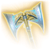Sethan960 gp
Mattis
(X: 59 Y: -127) He is found near the Requisitioned Barn in Rivington.

Circus of the Last Days
 Boots of Very Fast Blinking(X: -67 Y: -73) Won as a consolation prize from Akabi's Wheel of Fortune.
Boots of Very Fast Blinking(X: -67 Y: -73) Won as a consolation prize from Akabi's Wheel of Fortune.
.png) Eternal Carafe of Wine (Or Sometimes Acid)(X: -67 Y: -73) Won as a consolation prize from Akabi's Wheel of Fortune.
Eternal Carafe of Wine (Or Sometimes Acid)(X: -67 Y: -73) Won as a consolation prize from Akabi's Wheel of Fortune.


 Spellmight Gloves(X: -82 Y: -33) Rewarded by Lucretious at the end of the quest "Find Dribbles the Clown". Alternatively, can be pickpocketed or looted from her.
Spellmight Gloves(X: -82 Y: -33) Rewarded by Lucretious at the end of the quest "Find Dribbles the Clown". Alternatively, can be pickpocketed or looted from her.


 Sweet Stone Features(X: -89 Y: -73) Obtained by paying Boney 5000 gp to construct a statue of yourself.
Sweet Stone Features(X: -89 Y: -73) Obtained by paying Boney 5000 gp to construct a statue of yourself.Jungle
The player is teleported here if they win the jackpot in Akabi's spin the wheel game by pickpocketing his Djinni Ring before playing his game. (Note: You can only visit this area once.)
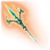Nyrulna(X: -1511 Y: -1522) Found in a chest next to the exit portal.
Open Hand Temple
 Seraphic Pugilist Gloves(X: -90 Y: -7) Found in the southernmost locked chest at the foot of the beds at the west end of the temple.
Seraphic Pugilist Gloves(X: -90 Y: -7) Found in the southernmost locked chest at the foot of the beds at the west end of the temple. Tasha's Hideous Laughter(X: -7 Y: -1004) Obtained by carrying the Sentient Amulet from Grymforge to a casket in the basement and accepting the curse yourself.
Tasha's Hideous Laughter(X: -7 Y: -1004) Obtained by carrying the Sentient Amulet from Grymforge to a casket in the basement and accepting the curse yourself..png) Sentient Amulet (Very Rare)(X: -7 Y: -1004) Obtained by carrying the Sentient Amulet from Grymforge to a casket in the basement and refusing to take on the monk's madness.
Sentient Amulet (Very Rare)(X: -7 Y: -1004) Obtained by carrying the Sentient Amulet from Grymforge to a casket in the basement and refusing to take on the monk's madness.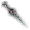Stillmaker(X: 67 Y: -1018) Found in a hole in the area underneath the temple. A successful DC 5 Perception check is needed to spot it. The hole is just at the top of the cragged rock and can be easy to miss. There is blood right next to the hole.
 Ring of Blink(X: -45 Y: -5) Obtained by stealing from or persuading the tressym, Tara, on the roof. (Note: It's recommended to do this during the quest "Find the Missing Letters" with Gale in your party.)
Ring of Blink(X: -45 Y: -5) Obtained by stealing from or persuading the tressym, Tara, on the roof. (Note: It's recommended to do this during the quest "Find the Missing Letters" with Gale in your party.)


Angleiron's Cellar
Entered via a cave entrance. Runepowder BombGiven by Wulbren when initiating the quest "Avenge the Ironhands", or stolen from his desk (X: -259 Y: -1079).
Runepowder BombGiven by Wulbren when initiating the quest "Avenge the Ironhands", or stolen from his desk (X: -259 Y: -1079).Bumpnagel
(X: 30 Y: 29) He is found in Angleiron's Cellar.


Rivington Docks
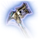Corpsegrinder(X: -222 Y: 93) Looted from Cairos.
 Mind Flayer Parasite Specimen(X: -212 Y: 129) Two are found in storage on the ship at the Western Beach.
Mind Flayer Parasite Specimen(X: -212 Y: 129) Two are found in storage on the ship at the Western Beach. Bonespike Boots(X: -1340 Y: -857) Found in a chest in a secluded passageway (X: -233 Y: 84) at the far end of the western trail leading away from the South Span Checkpoint.
Bonespike Boots(X: -1340 Y: -857) Found in a chest in a secluded passageway (X: -233 Y: 84) at the far end of the western trail leading away from the South Span Checkpoint.Wyrm's Crossing

 Scarlet Leather ArmourFound in the Shabby Wardrobe in Ffion Goldgrind's room (X: -14 Y: 75), or looted from Dolor at the Wine Festival in the Lower City (X: 18 Y: -36).
Scarlet Leather ArmourFound in the Shabby Wardrobe in Ffion Goldgrind's room (X: -14 Y: 75), or looted from Dolor at the Wine Festival in the Lower City (X: 18 Y: -36). Orphic HammerObtained by making a deal with Raphael at Sharess' Caress (X: -12 Y: 103), or stolen from the Archives within the House of Hope (X: -6543 Y: 2921).
Orphic HammerObtained by making a deal with Raphael at Sharess' Caress (X: -12 Y: 103), or stolen from the Archives within the House of Hope (X: -6543 Y: 2921). Absolute Confidence Amulet(X: 20 Y: 130) Pickpocketed from Naaber in Carm's Garm, or rewarded for exhausting all his dialogue options.
Absolute Confidence Amulet(X: 20 Y: 130) Pickpocketed from Naaber in Carm's Garm, or rewarded for exhausting all his dialogue options. Seemingly Gleaming Ring(X: 20 Y: 130) Rewarded for exhausting all Naaber's dialogue options after pickpocketing his Absolute Confidence Amulet.
Seemingly Gleaming Ring(X: 20 Y: 130) Rewarded for exhausting all Naaber's dialogue options after pickpocketing his Absolute Confidence Amulet.Entharl Danthelon
(X: -6 Y: 133) He can be found in Danthelon's Dancing Axe in Wyrm's Crossing.Blightbringer480 gp / 960 gp


Basilisk Gate Barracks

 Amulet of WindriderRewarded for completing the quest "Save Vanra". (Note: It's recommended to complete the quest "Help the Hag Survivors" first.)
Amulet of WindriderRewarded for completing the quest "Save Vanra". (Note: It's recommended to complete the quest "Help the Hag Survivors" first.) Duellist's PrerogativeRewarded for completing the quest "Save Vanra". (Note: It's recommended to complete the quest "Help the Hag Survivors" first.)
Duellist's PrerogativeRewarded for completing the quest "Save Vanra". (Note: It's recommended to complete the quest "Help the Hag Survivors" first.)Stormshore Tabernacle
 Anointed in Splendour(X: 109 Y: -24) Obtained by making an offering to one of the deities. You need to donate between 400 gp and 4500 gp, depending on your level.
Anointed in Splendour(X: 109 Y: -24) Obtained by making an offering to one of the deities. You need to donate between 400 gp and 4500 gp, depending on your level. Amulet of the Devout(X: 105 Y: -26) Stolen from the main Offering Chest in the basement. (Note: Doing so will inflict the character with Castigated By Divinity.)
Amulet of the Devout(X: 105 Y: -26) Stolen from the main Offering Chest in the basement. (Note: Doing so will inflict the character with Castigated By Divinity.) Shield of Shielding(X: 105 Y: -26) Stolen from the main Offering Chest in the basement. (Note: Doing so will inflict the character with Castigated By Divinity.)
Shield of Shielding(X: 105 Y: -26) Stolen from the main Offering Chest in the basement. (Note: Doing so will inflict the character with Castigated By Divinity.) Hammer of the Just(X: 796 Y: 1159) Stolen from the Offerings to Tyr Chest in the basement. (Note: Doing so will inflict the character with Castigated By Divinity.)
Hammer of the Just(X: 796 Y: 1159) Stolen from the Offerings to Tyr Chest in the basement. (Note: Doing so will inflict the character with Castigated By Divinity.) Deva Mace(X: 796 Y: 1159) Looted from Devas. As of Patch 7, this weapon is obtainable using a controller on PC or console with the following steps: kill a Deva summoned by Castigated by Divinity and Pick Up its body. Open any character's inventory, press A/X on their melee main-hand equipment slot, and unequip their current weapon in the weapon list that appears. Still in the weapon list, press A/X on the Deva Mace to equip it to the currently selected character.
Deva Mace(X: 796 Y: 1159) Looted from Devas. As of Patch 7, this weapon is obtainable using a controller on PC or console with the following steps: kill a Deva summoned by Castigated by Divinity and Pick Up its body. Open any character's inventory, press A/X on their melee main-hand equipment slot, and unequip their current weapon in the weapon list that appears. Still in the weapon list, press A/X on the Deva Mace to equip it to the currently selected character.Vicar Humbletoes
(X: 109 Y: -16) He is the guardian of the Stormshore Tabernacle.


Elfsong Tavern

 Boots of Psionic Movement(X: -731 Y: 553) Looted from Ch'r'ai Har'rak in Knights of the Shield Hideout.
Boots of Psionic Movement(X: -731 Y: 553) Looted from Ch'r'ai Har'rak in Knights of the Shield Hideout.


Baldur's Gate Graveyard

Forge of the Nine


Dammon
(X: -2 Y: -7) He is the blacksmith at the Forge of the Nine.


The Devil's Fee

Helsik
(X: -39 Y: -13) She is found in the Devil's Fee.


Tara
Note: Tara will appear on various rooftops in the Lower City if Gale spoke to her during the quest "Find the Missing Letters". Hat of the Sharp Caster(X: -29 Y: 6) Bought from Tara on the rooftop of the Devil's Fee. She only accepts fish and/or magical items in exchange for this item.
Hat of the Sharp Caster(X: -29 Y: 6) Bought from Tara on the rooftop of the Devil's Fee. She only accepts fish and/or magical items in exchange for this item. Slinging Shoes(X: -1 Y: -39) Bought from Tara on the rooftop of Highberry's Home, the house hosting the Wine Festival. She only accepts fish and/or magical items in exchange for this item.
Slinging Shoes(X: -1 Y: -39) Bought from Tara on the rooftop of Highberry's Home, the house hosting the Wine Festival. She only accepts fish and/or magical items in exchange for this item.
Highberry's Home
 Spaceshunt Boots(X: 18 Y: -36) Looted from Dolor, who can be found at the Highberry's Wine Festival after completing the quest "Solve the Open Hand Temple Murders".
Spaceshunt Boots(X: 18 Y: -36) Looted from Dolor, who can be found at the Highberry's Wine Festival after completing the quest "Solve the Open Hand Temple Murders". Dolor Amarus(X: 18 Y: -36) Looted from Dolor, or bought from Echo of Abazigal in the Murder Tribunal after the player character becomes an Unholy Assassin (190 gp).
Dolor Amarus(X: 18 Y: -36) Looted from Dolor, or bought from Echo of Abazigal in the Murder Tribunal after the player character becomes an Unholy Assassin (190 gp).Stormshore Armoury


Sorcerous Sundries
 Sights of the Seelie: Summon Deva(X: 350 Y: 1010) Learned via the Scroll of Bestial Communion, which is found by reading Caution Before the Seelie in the Sorcerous Vault beneath Sorcerous Sundries. You can reach the vault in two different ways: by interacting with the Clasped Book in the bookshelf of Tolna Tome-Monger's office upstairs and going through the portal, or by using the Weave Button labeled "Vault" on the middle level of Ramazith's Tower. The book is found north of the entrance portal, past a locked door (unlocked by a hidden button revealed by a DC 15 Perception check) and an illusory wall behind a chest.
Sights of the Seelie: Summon Deva(X: 350 Y: 1010) Learned via the Scroll of Bestial Communion, which is found by reading Caution Before the Seelie in the Sorcerous Vault beneath Sorcerous Sundries. You can reach the vault in two different ways: by interacting with the Clasped Book in the bookshelf of Tolna Tome-Monger's office upstairs and going through the portal, or by using the Weave Button labeled "Vault" on the middle level of Ramazith's Tower. The book is found north of the entrance portal, past a locked door (unlocked by a hidden button revealed by a DC 15 Perception check) and an illusory wall behind a chest. Curriculum of Strategy: Artistry of War(X: 368 Y: 1057) Learned via the Scroll of Artistry of War, which is found by reading The Red Knight's Final Strategem in the Sorcerous Vault.
Curriculum of Strategy: Artistry of War(X: 368 Y: 1057) Learned via the Scroll of Artistry of War, which is found by reading The Red Knight's Final Strategem in the Sorcerous Vault. The Tharchiate Codex: Blessing(X: 414 Y: 999) Obtained by reading The Tharchiate Codex and lifting the Tharchiate Withering curse. The book is found in the Sorcerous Vault, Elminster section. To unlock the Elminster door, you can cast knock or pull the lever at the end of the Silverhand section by opening doors in this order: Silverhand, Evocation, Wish.
The Tharchiate Codex: Blessing(X: 414 Y: 999) Obtained by reading The Tharchiate Codex and lifting the Tharchiate Withering curse. The book is found in the Sorcerous Vault, Elminster section. To unlock the Elminster door, you can cast knock or pull the lever at the end of the Silverhand section by opening doors in this order: Silverhand, Evocation, Wish. Danse MacabreObtained by reading The Tharchiate Codex, then reading the last page of the Necromancy of Thay and passing a DC 20 Wisdom Saving Throw.
Danse MacabreObtained by reading The Tharchiate Codex, then reading the last page of the Necromancy of Thay and passing a DC 20 Wisdom Saving Throw. Pyroquickness Hat(X: 411 Y: 997) Found in an invisible chest in the Sorcerous Vault, Elminster section.
Pyroquickness Hat(X: 411 Y: 997) Found in an invisible chest in the Sorcerous Vault, Elminster section. Hellfire Greataxe(X: 366 Y: 941) Found in a chest in the Sorcerous Vault, Illusion section. Once in the Vault, the section is reached by proceeding through the Silverhand door, and in the next area, destroying the door labeled "Illusion" (attempting to enter it conventionally will not work). Beyond that door is the room with the chest.
Hellfire Greataxe(X: 366 Y: 941) Found in a chest in the Sorcerous Vault, Illusion section. Once in the Vault, the section is reached by proceeding through the Silverhand door, and in the next area, destroying the door labeled "Illusion" (attempting to enter it conventionally will not work). Beyond that door is the room with the chest.Dethrone(X: 319 Y: 1000) Learned via a Scroll of Dethrone, two of which are found in the Sorcerous Vault, Karsus section. The section is unlocked by opening doors in this order: Silverhand, Abjuration, Silver. Pull the lever at the end and return to the beginning of the door puzzle to enter the Karsus door. One scroll is inside the Annals of Karsus book, the other is on a shelf next to the book.
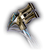Foebreaker(X: 326 Y: 998) Found in hidden chest in the Sorcerous Vault, Karsus section.
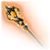Markoheshkir(X: 4970 Y: 705) Found in a Globe of Invulnerability in Ramazith's Tower. Use See Invisibility to see the lever and disable the globe.
 Robe of the Weave(X: 4970 Y: 705) Found in a Globe of Invulnerability in Ramazith's Tower. Use See Invisibility to see the lever and disable the globe.
Robe of the Weave(X: 4970 Y: 705) Found in a Globe of Invulnerability in Ramazith's Tower. Use See Invisibility to see the lever and disable the globe.

Rolan / Lorroakan's Projection
(X: -14 Y: -72) He is found at Sorcerous Sundries' front desk.
Birthright410 gp / 810 gp


Felogyr's Fireworks
 Infernal MaceLooted from several Bhaal cultists throughout Act 3, including those found at Felogyr's Fireworks and the Steel Watch Foundry.Mind Flayer Parasite Specimen(X: -32 Y: -114) Two are looted from Sally and Dravo Flymm in Flymm's Cobblers, just west of Felogyr's Fireworks.
Infernal MaceLooted from several Bhaal cultists throughout Act 3, including those found at Felogyr's Fireworks and the Steel Watch Foundry.Mind Flayer Parasite Specimen(X: -32 Y: -114) Two are looted from Sally and Dravo Flymm in Flymm's Cobblers, just west of Felogyr's Fireworks.Philgrave's Mansion
 Crypt Lord RingRewarded for completing the quest "Find Mystic Carrion's Servant" and keeping Thrumbo alive.
Crypt Lord RingRewarded for completing the quest "Find Mystic Carrion's Servant" and keeping Thrumbo alive. Torch of RevocationLooted from Mystic Carrion, potentially rewarded for completing the quest "Find Mystic Carrion's Servant", or bought from him through dialogue (145 gp). Can also be stolen from the chest behind him.
Torch of RevocationLooted from Mystic Carrion, potentially rewarded for completing the quest "Find Mystic Carrion's Servant", or bought from him through dialogue (145 gp). Can also be stolen from the chest behind him.
Mystic Carrion
(X: 14 Y: -160) He is found in Philgrave's Mansion.


Guildhall


Old Garlow's Place
 Staff of Interruption(X: -55 Y: -147) Rewarded by Mayrina for completing the quest "Help the Hag Survivors". She is found in the decrepit house southwest of Felogyr's Fireworks.
Staff of Interruption(X: -55 Y: -147) Rewarded by Mayrina for completing the quest "Help the Hag Survivors". She is found in the decrepit house southwest of Felogyr's Fireworks. Fey Semblance Amulet(X: -55 Y: -147) Rewarded by Mayrina for completing the quest "Avenge the Hag Survivors".
Fey Semblance Amulet(X: -55 Y: -147) Rewarded by Mayrina for completing the quest "Avenge the Hag Survivors".The Counting House
 Nymph CloakFound in High Security Vault n°1 in the Lower City of Baldur's Gate (X: -711 Y: 864), or bought from Ferg Drogher in Rivington (360 gp) (X: 45 Y: -98).
Nymph CloakFound in High Security Vault n°1 in the Lower City of Baldur's Gate (X: -711 Y: 864), or bought from Ferg Drogher in Rivington (360 gp) (X: 45 Y: -98).


 Elegant Studded Leather(X: -686 Y: 874) Found in High Security Vault n°9 (the big vault at the back of the room). A key for this vault can be obtained by completing the quest "Return Rakath's Gold". The gold can be looted off Roah Moonglow.
Elegant Studded Leather(X: -686 Y: 874) Found in High Security Vault n°9 (the big vault at the back of the room). A key for this vault can be obtained by completing the quest "Return Rakath's Gold". The gold can be looted off Roah Moonglow.Crimson Draughts
 Unstable Blood(X: -91 Y: -90) Rewarded for giving your blood to Araj Oblodra in Moonrise Towers in Act 2, then helping her again at her house, east of The Blushing Mermaid in Act 3. (Note: Some may not find this to be a beneficial effect.)
Unstable Blood(X: -91 Y: -90) Rewarded for giving your blood to Araj Oblodra in Moonrise Towers in Act 2, then helping her again at her house, east of The Blushing Mermaid in Act 3. (Note: Some may not find this to be a beneficial effect.)Rainforest's Home

The Blushing Mermaid
 Scrap and Shrapnel GrenadeThree are looted from Blunder Bob, Two-Toes Rischer, Bert Adams on the second floor.
Scrap and Shrapnel GrenadeThree are looted from Blunder Bob, Two-Toes Rischer, Bert Adams on the second floor..png)

Golbraith's House
 Abdel's Trusted Shield(X: -148 Y: -60) Rewarded by Golbraith in the upper level of his home in the Lower City, after convincing him of your courage against mind flayers.
Abdel's Trusted Shield(X: -148 Y: -60) Rewarded by Golbraith in the upper level of his home in the Lower City, after convincing him of your courage against mind flayers.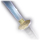Katana(X: -152 Y: -55) Found on a table in Golbraith's Cellar, which can be accessed through a hatch in Golbraith's House.
Bloomridge Park
Szarr Palace


 Pelorsun Blade(X: -1928 Y: 852) Found in Cazador's Dungeon. From the waypoint, take the second open door on the right. Teleport or jump to the door on the floor below. The rapier is in this room inside a burried casket.
Pelorsun Blade(X: -1928 Y: 852) Found in Cazador's Dungeon. From the waypoint, take the second open door on the right. Teleport or jump to the door on the floor below. The rapier is in this room inside a burried casket.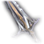Rhapsody(X: -1925 Y: 944) Looted from Cazador Szarr.
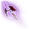Woe(X: -1925 Y: 944) Looted from Cazador Szarr.
 Vampire Ascendant(X: -1925 Y: 944) Obtained for Astarion after defeating Cazador and continuing the ritual.
Vampire Ascendant(X: -1925 Y: 944) Obtained for Astarion after defeating Cazador and continuing the ritual.Facemaker's Boutique

Society of Brilliance Lodge

Elerrathin's Home
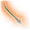Belm(X: -1572 Y: 976) Found in a chest in the basement, which is accessible through a DC 18 locked bookcase. It can be unlocked with a Harper Pin found on the roof.
 Staff of the Ram(X: -1572 Y: 976) Found in a chest in the basement, which is accessible through a DC 18 locked bookcase. It can be unlocked with a Harper Pin found on the roof.
Staff of the Ram(X: -1572 Y: 976) Found in a chest in the basement, which is accessible through a DC 18 locked bookcase. It can be unlocked with a Harper Pin found on the roof. Mind Flayer Parasite Specimen(X: -197 Y: 12) Two are looted from the guards near the entrance to the Upper City near the Baldur's Gate waypoint, Fist "Deadeye" Mibbs and Fist Healer Darbonna.
Mind Flayer Parasite Specimen(X: -197 Y: 12) Two are looted from the guards near the entrance to the Upper City near the Baldur's Gate waypoint, Fist "Deadeye" Mibbs and Fist Healer Darbonna.Jannath's Estate

 After Death Do Us Part(X: -250 Y: -44) Looted from Oskar Fevras if his affair is exposed to Lady Jannath, or if he is killed by Kerri during the quest "Free the Artist". Can also be looted from Lady Jannath if Oskar wasn't saved in Act 1.
After Death Do Us Part(X: -250 Y: -44) Looted from Oskar Fevras if his affair is exposed to Lady Jannath, or if he is killed by Kerri during the quest "Free the Artist". Can also be looted from Lady Jannath if Oskar wasn't saved in Act 1.House of Grief
 Handmaiden's Mace(X: -400 Y: -1651) Looted from Viconia DeVir in the Cloister of Sombre Embrace beneath the House of Grief.
Handmaiden's Mace(X: -400 Y: -1651) Looted from Viconia DeVir in the Cloister of Sombre Embrace beneath the House of Grief. Viconia's Priestess Robe(X: -400 Y: -1651) Looted from Viconia DeVir in the Cloister of Sombre Embrace beneath the House of Grief.
Viconia's Priestess Robe(X: -400 Y: -1651) Looted from Viconia DeVir in the Cloister of Sombre Embrace beneath the House of Grief. Viconia's Walking Fortress(X: -400 Y: -1651) Looted from Viconia DeVir in the Cloister of Sombre Embrace beneath the House of Grief.
Viconia's Walking Fortress(X: -400 Y: -1651) Looted from Viconia DeVir in the Cloister of Sombre Embrace beneath the House of Grief. Mirror of Loss(X: -645 Y: -735) Obtained by offering a prayer to the Mirror of Loss (DC 25 Religion check), then sacrificing one of the following: Constitution, Wisdom, Charisma, or your knowledge of the Necromancy of Thay. You'll receive the option to choose a +2 bonus to any ability (up to 24).
Mirror of Loss(X: -645 Y: -735) Obtained by offering a prayer to the Mirror of Loss (DC 25 Religion check), then sacrificing one of the following: Constitution, Wisdom, Charisma, or your knowledge of the Necromancy of Thay. You'll receive the option to choose a +2 bonus to any ability (up to 24).Grey Harbour Docks
 Slayer Knowledge(X: -226 Y: -170) Obtained after reading the book "Regarding the Slayer", given to you by Volo after saving him.Mind Flayer Parasite Specimen(X: -202 Y: -125) Six are stolen from a Wooden Trunk on a ship just east of the Steel Watch Foundry.
Slayer Knowledge(X: -226 Y: -170) Obtained after reading the book "Regarding the Slayer", given to you by Volo after saving him.Mind Flayer Parasite Specimen(X: -202 Y: -125) Six are stolen from a Wooden Trunk on a ship just east of the Steel Watch Foundry.
 Wavemother's Robe(X: -1048 Y: 312) Rewarded for completing the quest "Avenge the Drowned" by handing over Redhammer.
Wavemother's Robe(X: -1048 Y: 312) Rewarded for completing the quest "Avenge the Drowned" by handing over Redhammer.
Steel Watch Foundry

 Hellfire Engine CrossbowCrafted by combining three components found on the main floor of the Steel Watch Foundry at the table (X: -325 Y: -134) in the Security Office. The Watcher Crossbow Blueprint (X: -330 Y: -157) can be located on a table within the Security Office. The Targeting Module (X: -307 Y: -157) can be found on a table on the main floor right next to the plaque labeled "Watcher Targeting Module". The Steel Watcher Arm (X: -280 Y: -165) is situated on a table on the main floor, adjacent to the plaque labeled "Steel Watcher Arm Unit".
Hellfire Engine CrossbowCrafted by combining three components found on the main floor of the Steel Watch Foundry at the table (X: -325 Y: -134) in the Security Office. The Watcher Crossbow Blueprint (X: -330 Y: -157) can be located on a table within the Security Office. The Targeting Module (X: -307 Y: -157) can be found on a table on the main floor right next to the plaque labeled "Watcher Targeting Module". The Steel Watcher Arm (X: -280 Y: -165) is situated on a table on the main floor, adjacent to the plaque labeled "Steel Watcher Arm Unit". Winkling Gloves(X: -331 Y: -147) Looted from Zanner Toobin in the western-most room on the ground floor, or later accompanying the party in the basement during the quest "Save the Gondians".
Winkling Gloves(X: -331 Y: -147) Looted from Zanner Toobin in the western-most room on the ground floor, or later accompanying the party in the basement during the quest "Save the Gondians".
Iron Throne
Note: Duke Ravengard will not be present here (and will become a permanent enemy) if you don't attend Gortash's coronation first.Mind Flayer Parasite Specimen(X: -45 Y: 18) Found on a table inside a flooded room in the Iron Throne if Omeluum was not killed and Lady Esther was not given a githyanki egg in Act 1. Duke Ravengard's LongswordObtained from Duke Ulder Ravengard at camp by casting Command: Drop on him. The spell must be cast by a character who is not considered an ally: either by a companion that was not part of the original rescue party, or using a disguise to alter your appearance. Wyll will permanently leave the party and turn hostile if the Duke notices his sword being stolen. This can be prevented by immediately leaving the camp after picking up the sword.
Duke Ravengard's LongswordObtained from Duke Ulder Ravengard at camp by casting Command: Drop on him. The spell must be cast by a character who is not considered an ally: either by a companion that was not part of the original rescue party, or using a disguise to alter your appearance. Wyll will permanently leave the party and turn hostile if the Duke notices his sword being stolen. This can be prevented by immediately leaving the camp after picking up the sword.
Wyrm's Rock Fortress

 Flame Enamelled Armour(X: -28 Y: 184) Found in a chest in the corner of the armoury, southeast of the Wyrm's Rock waypoint.
Flame Enamelled Armour(X: -28 Y: 184) Found in a chest in the corner of the armoury, southeast of the Wyrm's Rock waypoint.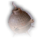Reflectoguard(X: -26 Y: 211) Two are obtained by both pickpocketing and looting Enver Gortash.


The Dragon's Sanctum


Murder Tribunal


 Amulet of Bhaal(X: -1248 Y: 503) Looted from Sarevok Anchev, or rewarded by him for completing the quest "Impress the Murder Tribunal".
Amulet of Bhaal(X: -1248 Y: 503) Looted from Sarevok Anchev, or rewarded by him for completing the quest "Impress the Murder Tribunal".

Echo of Abazigal
(X: -1263 Y: 511) Note: He will appear in the main chamber after completing the quest "Impress the Murder Tribunal" and becoming an Unholy Assassin of Bhaal.


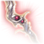Fleshrender190 gp


Lower City Sewers

 Cindermoth Cloak(X: -123 Y: 834) Looted from Aelis Siryasius in the area filled with greasey surfaces.
Cindermoth Cloak(X: -123 Y: 834) Looted from Aelis Siryasius in the area filled with greasey surfaces. Chancer's Carcanet(X: -124 Y: 827) Rewarded by Sarin in the Lower City Sewers after you return her skull.
Chancer's Carcanet(X: -124 Y: 827) Rewarded by Sarin in the Lower City Sewers after you return her skull. Breaching Pikestaff(X: -1393 Y: 56) Found in a coffin in the center of the Ancient Lair west of the Undercity Ruins waypoint.
Breaching Pikestaff(X: -1393 Y: 56) Found in a coffin in the center of the Ancient Lair west of the Undercity Ruins waypoint.Voiceless Penitent Bareki
(X: -157 Y: 939) He is found next to the Undercity Ruins waypoint.

Bhaal Temple
 Bonespike Gloves(X: -136 Y: 980) Looted from Strangler Luke in the Undercity Ruins during the quest "Get Orin's Netherstone" as part of the trial to enter the Temple of Bhaal. The enemy will despawn once the trial is complete so the item will need to be obtained before then.
Bonespike Gloves(X: -136 Y: 980) Looted from Strangler Luke in the Undercity Ruins during the quest "Get Orin's Netherstone" as part of the trial to enter the Temple of Bhaal. The enemy will despawn once the trial is complete so the item will need to be obtained before then.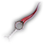Bloodthirst(X: 61 Y: 1004) Looted from Orin during the quest "Get Orin's Netherstone".


House of Hope
 Helldusk Helmet(X: -6482 Y: 2939) Found in a vault in front of the entrance to the Boudoir. The player will need to pass a DC 10 Wisdom check to activate the Inert Infernal Gem and then a DC 20 Arcana check to use the Infernal Control Gem to open the door. The helmet is found in the treasure pile.
Helldusk Helmet(X: -6482 Y: 2939) Found in a vault in front of the entrance to the Boudoir. The player will need to pass a DC 10 Wisdom check to activate the Inert Infernal Gem and then a DC 20 Arcana check to use the Infernal Control Gem to open the door. The helmet is found in the treasure pile.


 Gloves of Soul Catching(X: -6477 Y: 2884) Rewarded for completing the quest "Save Hope" and keeping Hope alive.
Gloves of Soul Catching(X: -6477 Y: 2884) Rewarded for completing the quest "Save Hope" and keeping Hope alive.
 Devotee's MaceObtained from the "Arm Thy Servant" option of Divine Intervention, a one-time level 10 Cleric spell. The mace can be looted from Hope after she casts this as a temporary companion.
Devotee's MaceObtained from the "Arm Thy Servant" option of Divine Intervention, a one-time level 10 Cleric spell. The mace can be looted from Hope after she casts this as a temporary companion.